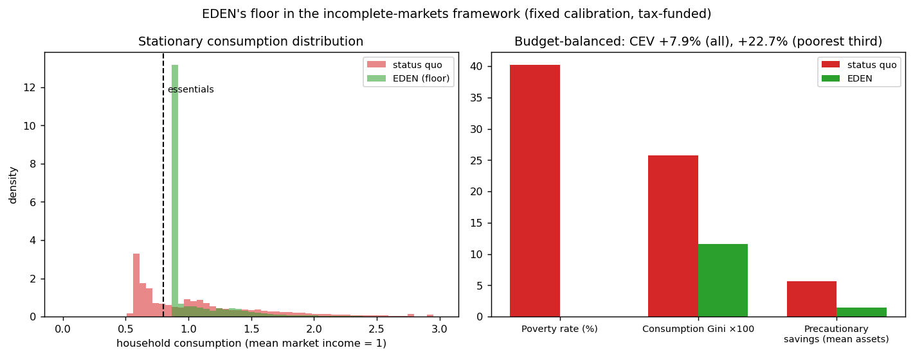

In plain language
Companion to RESULTS - Heterogeneous-Agent Comparison. Companion added July 11, 2026 — the v1–v5-era runs predate the plain-language convention; written from the committed RESULTS as it stands today (including any verification-pass corrections already applied in that file), with no reinterpretation.
The question
EDEN's agent-based runs persuade builders but are unfamiliar to economists. This run restates the central distributional claim in the profession's standard tool — an incomplete-markets, heterogeneous-agent (Aiyagari) model, the core of modern HANK macro: households face income risk and save against a no-borrowing constraint, and we compare today's leaky, partial safety net with EDEN's hard earnability floor at 1.10× essentials.
The correction — read this first
The July 2026 verification found and fixed two real problems, and this companion reports only the corrected headline (the pre-fix output is archived as *_PRE-FIX_archive.json; the original prose numbers are superseded). First, calibration: the income-risk process was built on the wrong volatility figure (the innovation std, 0.30, instead of the unconditional ~0.88), giving ~3x too little income risk — the status-quo consumption Gini came out 0.144 where the US sits around 0.30–0.40 — while a comment claimed "realistic." Second, funding: the floor was a free lunch, ~5.6% of aggregate income injected untaxed. The headline comparison is now budget-balanced: each regime funds its own transfers through a proportional income tax.
What we found
With realistic risk and the tax made visible: consumption poverty falls 40.2% -> 0.0%; the consumption Gini falls 0.258 -> 0.116; precautionary asset hoards drop 5.64 -> 1.50 — the insurance is working, so households stop stockpiling buffers against disaster; and welfare rises +7.9% overall, +22.7% for the poorest third (consumption-equivalent), net of the tax that pays for it. The cost is now on the table: at this model's generosity (essentials at 0.8× mean income) the floor requires a ~40.3% proportional tax, against ~14.6% for the status quo. Under CRRA(2) the insurance value exceeds even that cost — a defensible, now-honest result — but the 40% figure is the real price of a HANK-generosity floor. It reconciles with the agent-based model's "~2% of issuance" on a single cost curve (see EVE Sim v4 - Integrated Behavioral Funding): ~2% when essentials are ~10% of median income, ~40% at this model's much higher ratio. For the record, the old unfunded variant showed +19.5% CEV — meaning ~+11.6pp of it was unfunded transfer, not insurance.
The honest catch
Partial equilibrium at a fixed real rate; calibrated, not estimated. This is the heterogeneous-agent core, not a full HANK — no New Keynesian block (no nominal rigidities, Taylor rule, or monetary feedback) — and general-equilibrium effects of the floor on interest rates or wages are not modeled. The numbers illustrate the mechanism and its direction, not precise forecasts.
One line
Restated in the economists' own workhorse model — and corrected in July 2026 so the income risk is realistic and the floor visibly pays for itself through a tax — EDEN's floor still eliminates consumption poverty and is worth more than it costs: +7.9% welfare overall and +22.7% for the poorest third, net of a ~40% tax at this generosity level.
Words used here (added July 18, 2026 — plain-language house rule; the text above is unchanged). Heterogeneous-agent — a model of many unequal households, each with its own luck and savings, instead of one averaged "representative" household. Aiyagari — the standard academic workhorse of that kind (households face income risk, can't borrow, save up buffers), used as the outside benchmark economists trust. HANK — Heterogeneous-Agent New Keynesian: the modern macro family built on that core. Incomplete markets — no insurance exists against your own income luck; your only protection is your own savings. Gini — a 0-to-1 lopsidedness score: 0 means everyone consumes equally, 1 means one person gets everything; the US sits around 0.30–0.40. CRRA(2) — a standard dial for how strongly households dislike risk; 2 is the conventional middle setting. Consumption-equivalent (CEV) — welfare expressed as "worth the same to you as X% more consumption every year." Precautionary assets — rainy-day hoards saved purely against disaster; when real insurance appears they shrink — that is the 5.64 → 1.50. Partial equilibrium — prices and the interest rate held fixed rather than letting the whole economy adjust; a deliberate simplification. New Keynesian block / Taylor rule — the mainstream central-bank machinery (sticky prices, an interest-rate playbook) a full HANK would add; absent here. Calibrated, not estimated — dials set by hand to plausible values, not fitted to data. Innovation std vs unconditional volatility — the spread of each year's fresh income shock versus the total spread once shocks pile up over time; using the first where the second belonged was the bug. Issuance — newly created money in the agent-based sims; the "~2% of issuance" cost sits on the same curve as the ~40% tax here.
Figures

Technical results
Restates EDEN's central distributional claim in the framework academic economists actually use — an incomplete-markets, heterogeneous-agent model — so the result isn't dismissable as "just a bespoke simulation." Files in this folder.
⚠️ REVISED — recalibrated & budget-balanced after the July 2026 verification
Two fixes to the model below (old JSON archived as *_PRE-FIX_archive.json): (1) calibration — the Rouwenhorst chain was built on the innovation std (0.30) instead of the unconditional std (~0.88), giving ~3x too little income risk (SQ consumption Gini 0.144 vs US ~0.30-0.40) while the comment claimed "realistic"; (2) funding — the floor was a free lunch (~5.6% of aggregate income injected untaxed). The headline is now the budget-balanced comparison (each regime funds its own transfers via a proportional income tax).
Corrected headline (fixed risk, tax-funded): poverty 40.2% -> 0.0%; consumption Gini 0.258 -> 0.116; precautionary assets 5.64 -> 1.50 (insurance working); welfare CEV +7.9% overall, +22.7% for the poorest third — net of the tax that pays for it. The cost is now visible: at this essentials ratio (0.8x mean income) the floor requires a ~40.3% proportional tax (status-quo net: ~14.6%). The insurance value exceeds even that cost under CRRA(2) — a defensible, now-honest result — but the 40% figure is the real price of a HANK-generosity floor, and it is reconciled with the ABM's "~2% of issuance" by EVE Sim v4 - Integrated Behavioral Funding: both sit on one cost curve, ~2% at essentials ~10% of median income, ~40% at HANK's ratio. The unfunded variant is retained in the JSON only to show what the free lunch was worth (+19.5% CEV, i.e., ~+11.6pp was unfunded transfer, not insurance).
Numbers in the prose below predate the fix and are superseded by this section.
Why this model
The agent-based runs (v1–v3) are persuasive to a builder but unfamiliar to an economist. The Bewley–Huggett–Aiyagari incomplete-markets model — the "H" (heterogeneous agents) at the core of modern HANK macro — is the standard tool for exactly EDEN's question: how does a population facing income risk fare, and what does adding a floor do to poverty, inequality, savings, and welfare? Putting EDEN in this framework lets the distributional claim travel.
Setup. Households face persistent idiosyncratic income risk, save in a buffer-stock asset against a no-borrowing constraint, and choose consumption optimally (solved with the Endogenous Grid Method; stationary cross-section simulated for 60,000 households). Two regimes, identical in income risk, patience, and the interest rate:
- Status quo — market income plus a leaky, partial safety net (lifts the very bottom toward ~0.85× essentials, with incomplete take-up).
- EDEN — market income plus a hard, indexed earnability floor at 1.10× essentials (full take-up) and stable prices.
Results
| Measure | Status quo | EDEN |
|---|---|---|
| Consumption poverty (share below essentials) | 28.3% | 0.0% |
| Consumption Gini | 0.144 | 0.105 |
| Precautionary savings (mean assets) | 0.90 | 0.53 (−41%) |
| Welfare gain, all households (CEV) | — | +7.9% |
| Welfare gain, poorest third (CEV) | — | +12.0% |
(income normalized to mean 1; essentials = 0.8; EDEN floor = 0.88; welfare in consumption-equivalent terms.)
What it means (in the language reviewers expect)
- The floor eliminates consumption poverty by construction. In the stationary cross-section, 28% of households consume below essentials under the status quo; under EDEN's floor, none do. The left tail of the distribution is moved to just above the essentials line (see
fig_hank.png). - It compresses consumption inequality — the consumption Gini falls from 0.144 to 0.105 — because the floor lifts the bottom without touching the top.
- It crowds out precautionary saving — mean assets fall ~41%. This is the classic incomplete-markets result and a feature, not a bug: a credible floor is insurance, so households no longer need to hoard buffers against the downside. In welfare terms, EDEN completes a missing insurance market.
- Welfare gains are large and concentrated at the bottom — a +7.9% consumption-equivalent gain on average, rising to +12.0% for the poorest third. That distribution of gains is exactly what a floor should produce.
The academic translation: EDEN's earnability floor behaves like a guaranteed-income / public-insurance program in the Aiyagari framework and delivers the standard welfare gains from completing missing insurance — except EDEN provides it as paid, useful work financed by the protocol's own routing (shown in the ABM and SFC models) rather than as a tax-financed transfer.
Honest limits
Partial equilibrium at a fixed real rate; calibrated, not estimated. This is the heterogeneous-agent core, not a full HANK — there is no New Keynesian block (no nominal rigidities, Taylor rule, or monetary-policy feedback), because the distributional claim doesn't need one; adding it is a later step if a reviewer wants the inflation dynamics in this framework too. General-equilibrium feedback (a floor shifting the equilibrium interest rate or wages) is not modeled, and the floor's funding is abstracted here — it's handled by the agent-based and stock-flow-consistent models. The numbers are illustrative of the mechanism and its direction, not precise forecasts. Audience: academic economists.
Files
hank_sim.py— the EGM solver, the two regimes, and the stationary-distribution simulationfig_hank.png— consumption distributions + the poverty/Gini/savings comparisonresults_hank.json— all statistics
Raw data